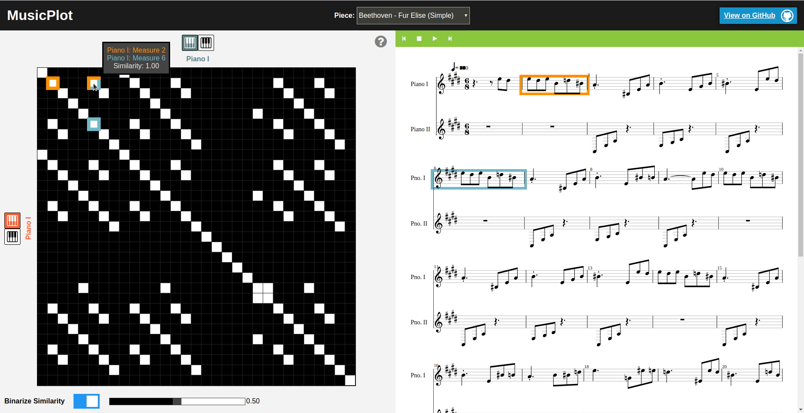

By Wilson Louie

Example view of the MusicPlot interface. Users start by choosing the piece of music they wish to visualize via the top drop-down menu. The left panel shows a configurable self-similarity matrix representation between two instrumental parts of the piece, and the right panel shows the conventional music sheet representation with audio playback functionality. The two views are in sync, such that user interactions on one panel would reflect accordingly in the other panel.
Visit MusicPlot here (only tested on Chrome!)
Self-similarity matrix representations of music has been shown to enable identification of structural and rhythmic elements by visual inspection. However, previous efforts in visualizing symbolically encoded music this way aim to visualize all, or most, instrumental parts of the opus as a single image, by overlaying multiple similarity matrices and introducing a myriad of color encoding. The result is something that can be difficult to decipher. Furthermore, from just the standalone matrix image, it becomes difficult to pinpoint the exact locations in the original piece a particular matrix cell is meant to represent. Here, we propose an interactive music visualization system that addresses these shortcomings. We anticipate that this visualization system would enable even laymen who cannot read musical notation to track and appreciate the structure of a piece of music.
Read the associated paper and visit the Github repository.